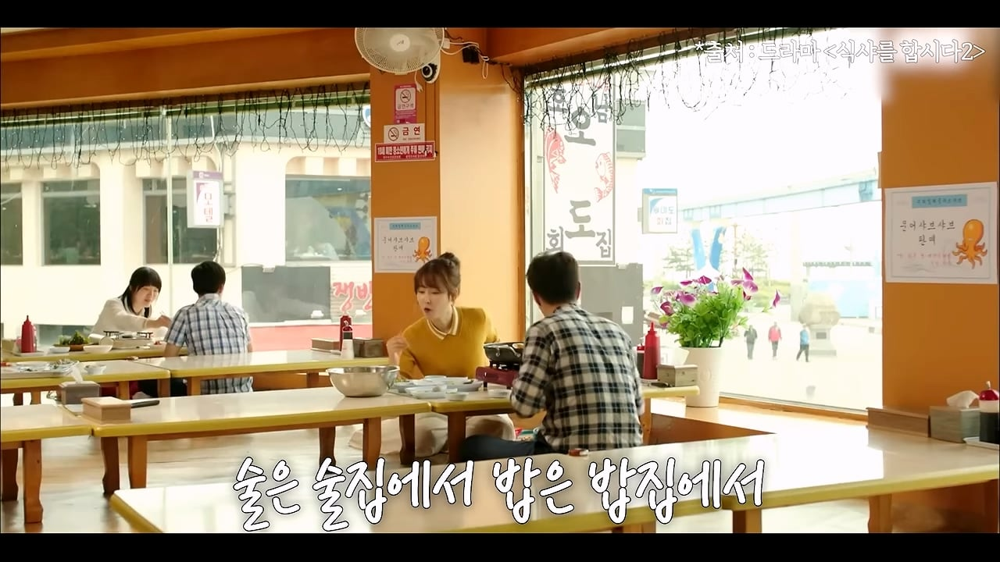
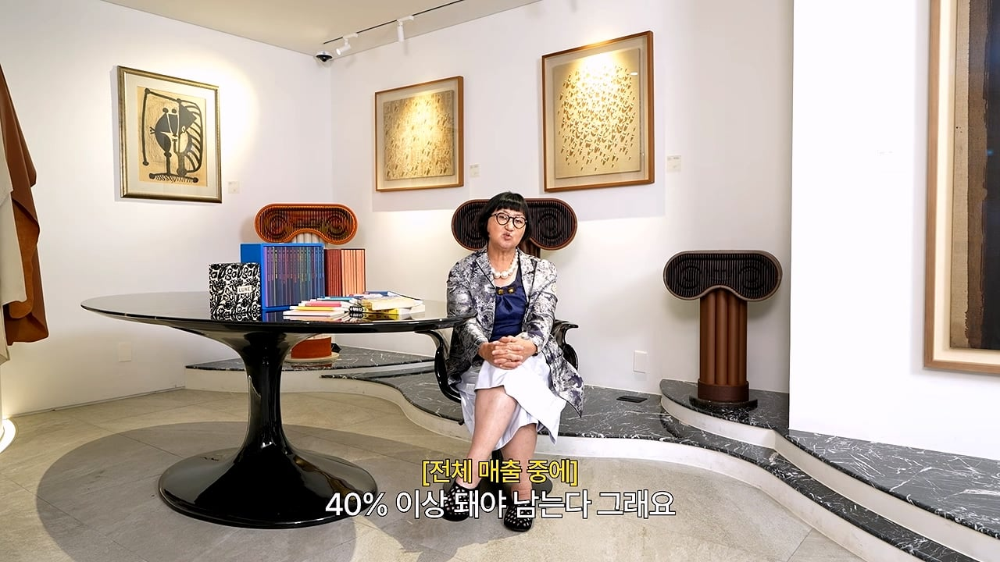
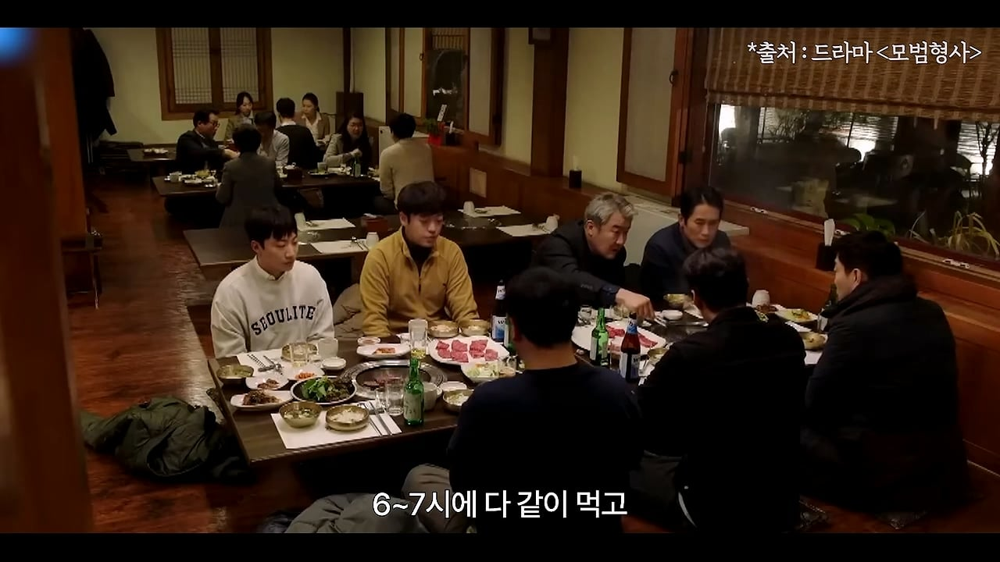

미슐랭 3스타는 돈을 잘 버는
그런 업이 아니라고 생각한다

한국의 경우
술은 술집에서 밥은 밥집에서라는 생각한다
밥은 밥집에서 조금만 반주하고 먹고 끝낸다
2차로 술집가자고 한다
외국의 경우
미슐랭 3스타 식당에서
1인당 400~500불이다
그러면 술도 400~500불 먹겠다는
생각을 하고 미슐랭에 간다

외국에서는 주류가 전체 매출 중에
40% 이상 돼야 남는다고 한다
한국에서 엄청 잘되는 집도
전체 매출 중에 주류 매출 40% 이상 되는 곳이 없다
또 한가지는
너무 같은 시간에 우리가 밥을 먹는다
외국을 보면 10시에 밥 먹는 경우도 있다
스페인의 저녁7시에 식당을 가면
한국인 밖에 없다

한국의 경우 6~7시에 다 같이 밥 먹고
9시가 되면 집으로 간다
외국의 모든 레스토랑은
1부 2부가 있다
한국은 디너 1부 2부가 안된다
요약
1. 주류 매출의 비중이 너무 낮다
2. 다 같은 시간에 밥 먹고 다 빠진다
노희영 유튜브 참고
댓글
수집 당시 댓글 49개
일째근무중 · 15 시간 전
이거 진짜 공감. 특히 재료 한계가 있다는 점. 해외는 비둘기 같은 독특한 고기도 많이 쓰잖아. 우리는 소, 돼지, 오리, 닭, 양 정도가 끝이기도 하고, 30~40만원씩 하는 파인다이닝에 메인으로 소 안나오면 실망하는 사람도 많지. 그러다보니까 레스토랑에서 메뉴 선택이 한정적인 부분도 있는거 같음.
츄잉잉 · 23 시간 전
어차피 미슐랭 비싼 식당들은 한국이나 외국이나 먹는놈들만 먹는거라 똑같음
익사한넙치 · 23 시간 전
술 훔쳐 먹는거 생각하면 주류 매출 더 줄어들듯 파인다이닝
사막의낙타 · 23 시간 전
어짜피 외국에서도 부어라 마셔라는 안함 다만 밥먹을때 와인 한두잔은 거의 필수적으로 하다보니 그게 단가가 맞겠지 우리동네 식당 하나도 주문할라면 무조건 1인 1잔 이상 시켜야 주문받고 하는데 그러면 그럭저럭 괜찮다 하더라
구미리 · 23 시간 전
그냥 그런갑다 해야지 미슐랭에 맞춰서 식문화를 뜯어고칠수는 없잖아ㅋㅋㅋㅋㅋㅋ
김양호 · 22 시간 전
첫짤 모자 쓰고 있는 줄 알았네
혼세마왕 · 20 시간 전
나도 "대단한 모자다"싶었어ㅋㅋ
자몽에이드 · 19 시간 전
엌 ㅋㅋ 저게 모자가 아니었네
hidein · 22 시간 전
저 내용 요약하면 결국 "요식업은 물장사다." 라는 말임. 그건 이미 한국에서도 몇십년전부터 알고 있는 진리쟎아. 그럼 한국 미슐랭 3스타가 유지되기 위해 필요한 것은? 미슐랭 쉐프들이 배출되고 있는 요리부분에 비해 한참 뒤떨어진 주류산업의 발전, 주류 전문가의 육성과 신뢰성 재고. 댓글에 모수 이야기 잠깐 나왔지만, 뭐든지 스타트를 끊는 기간에 신뢰성문제가 생기면 그 여파는 굉장히 치명적이고 오래 감. 부정적 각인효과가 생기거든. 저 아지매가 헛소리한다는 느낌을 받는 이유는 괜히 1,2부가 있다, 라는 말로 그렇지않아도 비싼 파인다이닝의 인건비 비중을 올리는 이상한 예시를 들어서 자기 말의 신뢰성을 스스로 깎아먹었고, 업계 스스로 해결해야 할 부분을 한국 문화타령하면서 어물쩡 소비자에게 책임전가하려고 들기 때문임.
고랭지오렌지 · 22 시간 전
소비자 책임 전가로 보이진 않는데... 비즈니스 환경이 이러하다 설명하는 것 같구만
hidein · 20 시간 전
지금 파인다이닝 업체에서 제공되는 고급 주류를 믿고 소비할 수 없는 신뢰성 문제가 엄연히 있음. 고객이 가져온 빈티지 와인을 더 싼 와인으로 바꿔치기한 모수 사건이 그거임. 건너 듣기로는 전문 소믈리에가 없어서 와인 좀 아는 아마추어를 데려왔다는 썰이 있던데... 모수 정도의 파인다이닝에서도 이런 일이 벌어지는데 이런 환경에서 소비자가 뭘 믿고 300달러 음식에 어울리는 300달러짜리 주류를 주문하겠음. 환경탓을 하고 싶다면, 한국 문화탓이 아니라 아직 고급 주류를 제공할 준비가 안된 파인다이닝 업계의 환경을 탓하는게 난 맞다고 생각함.
갸뷰 · 12 시간 전
아무리봐도 문화와 정서에 맞지않다라고 이야기하는건데 이걸 소비자 전가라고 생각하면 너가 페미 불편러랑 다른게 뭐냐? 심지어 한국 파인다이닝 = 모수라고 생각하는 그 지식의 깊이가 매우 낮음에 감탄함 한국 식문화 자영업 전혀 모르고 흑백요리사 박에 안본게 너무 느껴짐 안성재와 모수가 파인다이닝의 모든거야! 그래서 깔꺼야의 논리가 참 지능이 딸리는것도 느껴짐 그럼 반대로 모수를 빼면 너가 아는 한국 파인다이닝에 문제점 있기는함? 100번 양보해서 모수가 나쁜놈이라고 치고 다른 식당들은 왜 연좌제임?
망량 · 21 시간 전
저게 소비자에게 책임전가하는걸로 보인다면 병원에 가야합니다
ㅣㅓㅣ · 21 시간 전
그냥 정리하자면 파인다이닝 문화가 한국 정서와 맞지않는다 아님? 이게 소비자 책임전가인가
라만챠 · 21 시간 전
피해망상있어?
리뷰사진에진심인편 · 22 시간 전
뭐 파인다이닝이 우리 문화도 아닌데 뭐
1032기 · 22 시간 전
미슐랭 식당 선정기준에 우리나라 식문화가 어울리지 않는다면 당연히 식당수가 적을 수 밖에 없을 뿐더러 미슐랭 식당이 국내에 많으면 좋다라 보지도 않음 우리나라는 우리나라만의 맛있는 식당도 많고 그 문화도 사랑함 미슐랭 식당수가 국격을 판단하는 기준이 되는것도 아니기에 상관없다봄
골든하인드 · 22 시간 전
원래 우리나라는 고려말 부터 600년 넘게 사대부 유교 문화가 지배해왔음 권력자와 거부들도 청빈(淸貧)을 덕목으로 삼아 왔음 애초에 파인 다이닝이란게 산업혁명 후 돈을 번 서양 부르조아들이 귀족 코스프레를 하려고 돈을 처들이는 것인데 600년 넘게 부자들이 가난한 서민 코스프레를 해온 나라에서 귀족 코스프레가 안먹히는 것은 당연함 세계적인 부호들이 깐부치킨에서 튀김닭 뜯으며 맥주먹는 것에 열광하는게 한국인이고 그게 우리의 정체성임
대왕곰 · 21 시간 전
청빈이 덕목이지만 청하지도 빈하지도 않지
골든하인드 · 16 시간 전
청하지도 빈하지도 않은 사람들이라도 이걸 티 내면 바로 욕먹거든 그래서 귀족 흉내내는 걸 티내지 않지
갸뷰 · 11 시간 전
너 중국이나 일본인이지 또 프레임 씌우기 들어가네 한국은 가난하게 있어야하는 눈치 문화가 있다 그래서 열등하고 뒤쳐진 국가라는 생각이 들게하는 프레임 도대체 600년 넘게 부자들이 가난한 서민 코스프레를 했다는 주장은 뭘 근거로 나오는거냐? 한국 지주들 삶을 보고 하는 소리긴 하냐? 러시아나 일본 근대처럼 지랄맞게 빈부격차 안생긴게 그렇게 배아픔?
KING · 21 시간 전
10시에 저녁을 먹으면 다음날 출근을 못해요.....
죽으면그만인이슬람인 · 21 시간 전
출근하는 사람을 위하누식사는아닌긴해...
비비스 · 21 시간 전
유럽에서 3-400유로 정도에 마실 수 있는 와인이나 집에서 30만원 정도에 구할 수 있는 급의 와인을 국내 파인다이닝에서 페어링이라는 이유로 2~3배에 가까운 가격을 지불하면서까지 마시고 싶지는 않음. 업장에서 발생하는 인건비나 보관비, 수입·유통비, 주세등 각종 비용이 있다는 건 이해함. 나도 술에 돈을 아끼는 편은 아님. 하지만 그 비용을 감안하더라도 내가 지불하는 총액에 비해 와인의 급이 만족스럽지 않다면 굳이 페어링을 선택할 이유가 없다는거지.
ㅆㄷㅇㅎ · 21 시간 전
유럽도 일부만 저러는거아님? 미국은 식당들 9시넘어가면 걍 오더 안받는대가 수두룩함 오히려 8시부턴 사실상 장사 거의 종료임 바라도 달려있으면 모를까 저건 그냥 진짜 해도 유럽놈들이나 저러고 먹겠지 누가 외식을 두세시간씩 일주일에 한두번씩해
햟햟햟 · 20 시간 전
술의 최종목적은 취하는건데 한국인 특성상 빠르고 싸게 취할수있는 소주가있음
맨서 · 10 시간 전
최종목적은 사람마다 다르지..
호선노선도 · 20 시간 전
보통 코스당 30분 치더라. 애피타이저 - 메인 1 - 메인 2 - 디저트 기본 4코스만해도 2시간임...ㅋㅋㅋ
번만지면싼다 · 20 시간 전
저건 그냥 부가적인거 뿐이고 결국 현대에서 파인다이닝은 접대용 서비스임 미국에서 직장상사,거래처 접대할 때 이용할만한 곳이 파인다이닝 말고 더 있음? 한국은 고급 소고기,한정식 식당이 대표적인 접대 스팟인데 거기에 파인다이닝이 들어갈 자리가 없으니까 경쟁력이 떨어지는 거임 저 사람이 말한 우리는 저녁을 비슷한 시간대에 먹는다,식사시간이 짧아 그래서 디너 1부,2부 운영이 안된다 이 말도 틀린 게 고깃집 가면 기본 2~3시간은 앉아 있는게 보통임 원론적인게 아니라 그냥 문화사대주의 관점으로 경쟁력이 떨어지는 걸 포장해주는 거뿐임
갸뷰 · 11 시간 전
이런 관점으로 생각해본적 없는데 약간 동감가면서도 약간 다른 의견도 있는데 이해가긴한다 파인다이닝을 이용하는 주 고객층과 지불가능한 능력이 가진 사람들이 이용하는 식당은 이미 시장을 선점한 방향성이 있으니 침투가 어렵다 오 맞말인거 같긴해
군인복무규율 · 20 시간 전
우리나라 문화가아닌데 당연하지 ㅋㅋㅋ 꼬우면 24시간 국밥 팔아라 ㅋㅋ
니소그 · 20 시간 전
미슐랭 자체가 적정 가격대를 맞춰야 주는 구조인데 수익이 어떻게 나겠어 일하는 사람 숫자만 봐도 말이 안 되는데 해외도 별 다를 것이 없어서 유명 셰프라는 양반들이 방송 찍고 온몸 비틀기하는건데 한국이라서 그렇다라는 건 너무 설명이 이상하다 저번 칼국수 3만원 이야기도 그렇고 택도 없는 소리만 하네
sjw3ur · 19 시간 전
그냥 부유층 문화 아니냐? 서양도 일반인들은 밥 때 되면 밥먹는데. 심지어 밖에서는 잘 안먹고 집에서 다들 해먹는데 ㅋㅋ
굴렀던곰 · 19 시간 전
미슐랭3는 파인다이닝만 있나? 모수에서 와인가지고 그지랄하는데 잘도..?ㅋㅋ
화이 · 19 시간 전
이 아줌마가 확실히 시장분석은 잘함
혼내주꼬야 · 18 시간 전
좀 의아한게 유럽이나 미국이 밤 10시에 돌아다닐수 있는 치안이 됩니까?
Mongrip · 18 시간 전
저런데 가는사람이 차없이 지하철 타고 걸어다니진 않음. ㅋㅋㅋ
아이스크림마싯엉 · 18 시간 전
근데 일식집은 또 주류 엄청 팔고 1 2부도 함 그냥 파인다이닝이 타겟 자체를 개인으로 잡으니까 그렇지
Glaswegian · 18 시간 전
문화가 다르면 아쉬운 쪽이 적응해야 하는거 아닌가?
Mongrip · 18 시간 전
스페인 예시는 좀 그러네 스페인 9시까지 해 떠있는나라임 ㅋㅋㅋ
초고추장 · 18 시간 전
한국 저녁식사 문화가 문제가 아니라, 미슐랭 어쩌고 하는 외래 문화를 한국 외식업에 억지로 도입하려는 게 문제 아님?
개드립피자 · 17 시간 전
외국에서 밥 먹으려면 맛이 없잖아 비싼 돈 줘야 맛있으니까 기꺼이 내는거지 한국은 맛집 많은데 뭐하러감
곽듣퍼 · 17 시간 전
한국식 밥문화가 그냥 그런걸 어쨤
갸뷰 · 11 시간 전
파인다이닝이 한국 문화와 맞지않아 산업의 성장이 힘들다를 졸라 비꽈서 생각하는 친구들이 많은게 신기하네 모수가 파인다이닝 전체를 대변한다 생각하는것도 신기하고 실제로 파인다이닝 다녀봤으면 모수는 그저 한개 식당일 뿐인데 언론과 프로그램의 힘이 대단하긴 한거같음 경험 못한사람도 경험한 것처럼 만들어주니까
부마루불 · 10 시간 전
술까지 먹어도 금전적 부담 없을만한 사람이 타겟인데 밥값만 지불해도 허덕이는 사람들이 자리 채워서 그런건 아닐까 술팔아야 돈되는 식당에 안주 싸다고 와서 술은 안먹는 느낌
묘성이 · 8 시간 전
웃기는 말임 서구권 문화자체가 식사와 술을 그다지 곁들이지않음, 잘해봐야 와인 한잔 먹는정도지 오히려 동양이 술과 밥을 같이 잘먹음 일본을보면 3성급에서 잘만 전통주팔아서 수익올림 맞지도 않는 레스토랑보다 한식에 집중하는게 나음
지져쓰 · 7 시간 전
예약 존나 힘든데는 늦은시간까지 1,2부 해줬으면 좋겠는데
헬조선반도 · 7 시간 전
근데 짜증나는게 양1키들 사치 식문화를 미디어에서 집단적으로 왜 자꾸 우리에게 먹이려고 하는지 모르겠음 안통하면 시장평가 받고 안하면 되잖아 왜 자꾸 이러니 저러니 사치스러운 식문화에 와인까지 엎으려고 하냐고
존나일하기싫다 · 2 시간 전
애초에 우리는 밥먹는데 저런 돈 쓰는 문화가 아닌데 저 돈 쓸만한 사람이 얼마나 되겠음 허영심이나 진짜 미식 취미인 애들만 돈 써야하는데 되겠냐고